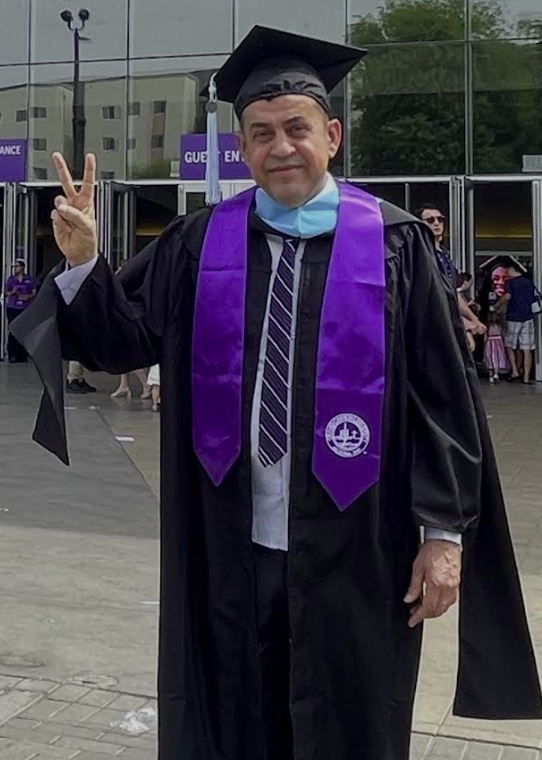
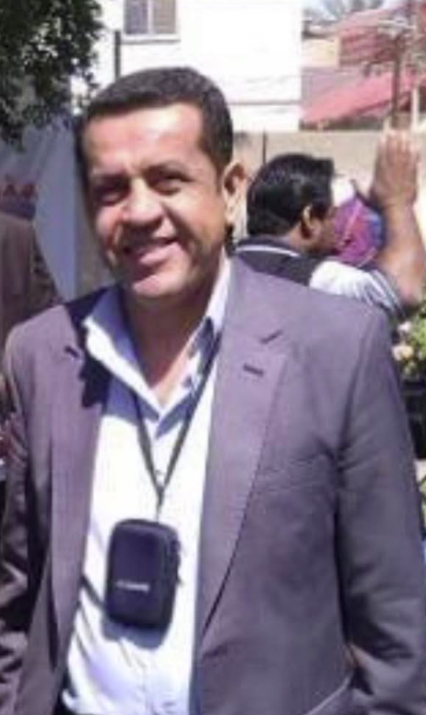

Biography
Ahmed Al-Salihi built his career through dedication to journalism and a lifelong passion for learning. Over the years he has developed strong communication skills and a deep understanding of storytelling through media. His work allowed him to meet many people and document important events and stories within his community.
Education has always been a major part of his life. Even while working and supporting his family, Ahmed continued to pursue knowledge and personal growth. His determination eventually led him to complete his degree, an achievement that reflects his perseverance and commitment to self-improvement.
Beyond his professional life, Ahmed is known by family and friends as a supportive and inspiring person. He believes that learning never stops and encourages others to stay curious, work hard, and always strive to improve.

A proud moment celebrating a major educational milestone representing years of dedication and commitment to education.

Ahmed's journalism work allowed him to connect with communities and share meaningful stories through media and reporting.